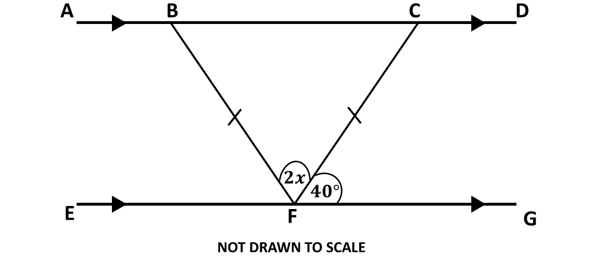
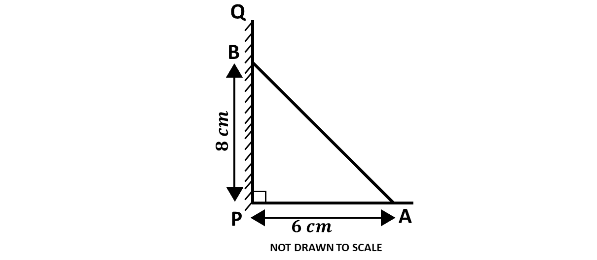

BECE
Year to Practice:
1990
1991
1992
1993
1994
1995
1996
1997
1998
1999
2000
2001
2002A
2002B
2003
2004
2005
2006
2007
2008
2009
2010
2011
2012
2013
2014
2015
2016
2017
2018
2019
2020
2021
2022
2023
2024
PAST QUESTIONS 2014
Time yourself to improve on your speed. You are to use not more than 60 minutes for this section.
Click on the link below when you are ready.
Kindly contact the administrator of the site on WhatsApp or Phone (0208711375) for the link to the test.
Try the questions first, using not more than 15 minutes for each question, and watch the accompanying videos to see how the questions are solved.
Question 1
-
\(P =\) {Factors of 30}
\(\hspace{0.5cm}\) \(Q =\) {Multiples of 5 less than 40}
\(\hspace{0.5cm}\) Find \(P \cap Q\) -
A trader saved GH₵200.00 for 3 years at 12% simple interest per annum. What will be the total amount in the trader's account at the end of the 3 years?
-
Evaluate \(\frac{4.56 \times 3.6}{0.12}\) and leave your answer in standard form.
Question 2
-
\(i)\) Ama scored 82, 74 and 90 in three tests. What mark should she score in the fourth test, so that her average mark for the four tests would be 85?
\(\hspace{0.5cm} ii)\) What was her median score in the four tests?
-
\(\)

In the diagram, \(\overline{AD}\) is parallel to \(\overline{EG}\), angle \(CFG = 40^\circ\) and triangle \(BCF\) is isosceles. Find the value of:
\(\hspace{0.5cm} i)\) angle \(CBF\);
\(\hspace{0.5cm} ii)\) angle \(DCF\);
\(\hspace{0.5cm} iii)\) \(x\)
Question 3
-
Solve for \(x\), if \(\frac{1}{3}x + 1\frac{2}{3} < -\frac{3}{4}x - \frac{1}{2}\)
-
The following shows the distribution of marks of students in an examination.
\(\hspace{0.7cm}\) 6 \(\hspace{0.5cm}\) 43 \(\hspace{0.5cm}\) 26 \(\hspace{0.5cm}\) 18 \(\hspace{0.5cm}\) 27
\(\hspace{0.5cm}\) 42 \(\hspace{0.7cm}\) 8 \(\hspace{0.5cm}\) 22 \(\hspace{0.5cm}\) 31 \(\hspace{0.5cm}\) 39
\(\hspace{0.5cm}\) 55 \(\hspace{0.5cm}\) 44 \(\hspace{0.5cm}\) 37 \(\hspace{0.5cm}\) 47 \(\hspace{0.5cm}\) 59
\(\hspace{0.5cm}\) 10 \(\hspace{0.5cm}\) 12 \(\hspace{0.5cm}\) 36 \(\hspace{0.5cm}\) 53 \(\hspace{0.5cm}\) 48\(\hspace{0.5cm} i)\) Make a stem-and-leaf plot of the marks above.
\(\hspace{0.5cm} ii)\) Find the probability of selecting a student who scored between 40 and 50.
\(\hspace{0.5cm} iii)\) Find the number of students who passed the examination, if the pass mark was 30.
Question 4
-
A box has length 8.0 cm, width 5.0 cm and height 10.0 cm. Find the
\(\hspace{0.5cm} i)\) total surface area of the box;
\(\hspace{0.5cm} ii)\) the volume of the box.
-
\(i)\) Using a scale of 2 cm to 1 unit on both axes, draw two perpendicular axes \(Ox\) and \(Oy\) on a graph sheet.
\(\hspace{0.5cm} ii)\) On the same graph sheet mark the \(x\)-axis from \(-5\) to \(5\) and the \(y\)-axis from \(-6\) to \(6\).
\(\hspace{0.5cm} iii)\) Plot and join the points \(A(0, 3)\), \(B(2, 3)\) and \(A(4, 5)\) to form triangle \(ABC\).
\(\hspace{0.5cm} iv)\) Draw the image \(A_1B_1C_1\) of triangle \(ABC\) under a translation by the vector \(\begin{pmatrix}-1 \\ -1\end{pmatrix}\)
\(\hspace{0.5cm} v)\) Draw the image \(A_2B_2C_2\) of triangle \(ABC\) under reflection in the \(x\)-axis.
Question 5
-
Using a ruler and a pair of compasses only;
\(\hspace{0.5cm} i)\) Construct triangle \(PQR\) such that \(|PR| = 8\) cm, \(|PQ| = 6\) cm and \(|QR| = 5\) cm;
\(\hspace{0.5cm} ii)\) Construct the perpendicular bisector of \(|PR|\) and label it \(l_1\);
\(\hspace{0.5cm} iii)\) Construct the perpendicular bisector of \(|QR|\) and label it \(l_2\);
\(\hspace{0.5cm} iv)\) Label the point of intersection of \(l_1\) and \(l_2\) as \(N\).
\(\hspace{0.5cm} v)\) With \(N\) as the center and radius equal to \(|NP|\) draw a circle.
-
\(i)\) Measure the radius of the circle.
\(\hspace{0.5cm} ii)\) Calculate the circumference of the circle, correct to 3 significant figures.
\(\hspace{0.5cm}\) [Take \(\pi = 3.14\)]
Question 6
-
Factorise completely
\(\hspace{0.5cm}\) \(6xy - 3y + 4x -2\)
-

The diagram shows a ladder \(AB\) which leans against a vertical wall \(PQ\) at \(B\). If \(|PB|\) is 8 m, and the other end of the ladder is 6 m away from the foot of the wall (at P), find the length of the ladder \(AB\).
-
Kojo had 1,800 bags of rice in stock for sale. In January, he sold \(\frac{2}{3}\) of it. In February, he sold \(\frac{3}{4}\) of what was left.
\(\hspace{0.5cm} i)\) What fraction of the stock of rice did he sell?
\(\hspace{1cm} \alpha)\) in February?
\(\hspace{1cm} \beta)\) in January and February?
\(\hspace{0.5cm} ii)\) How many bags of rice were left unsold by the end of February?
To advertise on our website kindly call on 0208711375 or 0249969740.